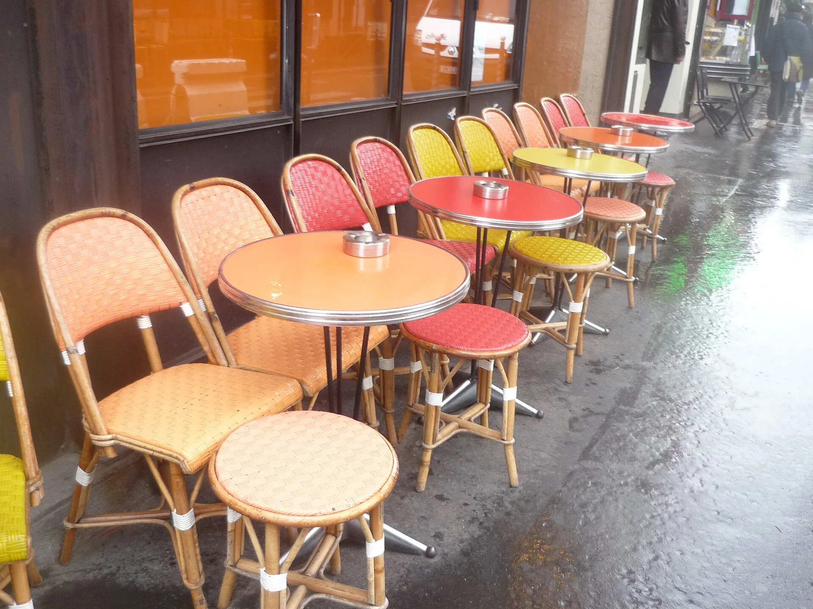
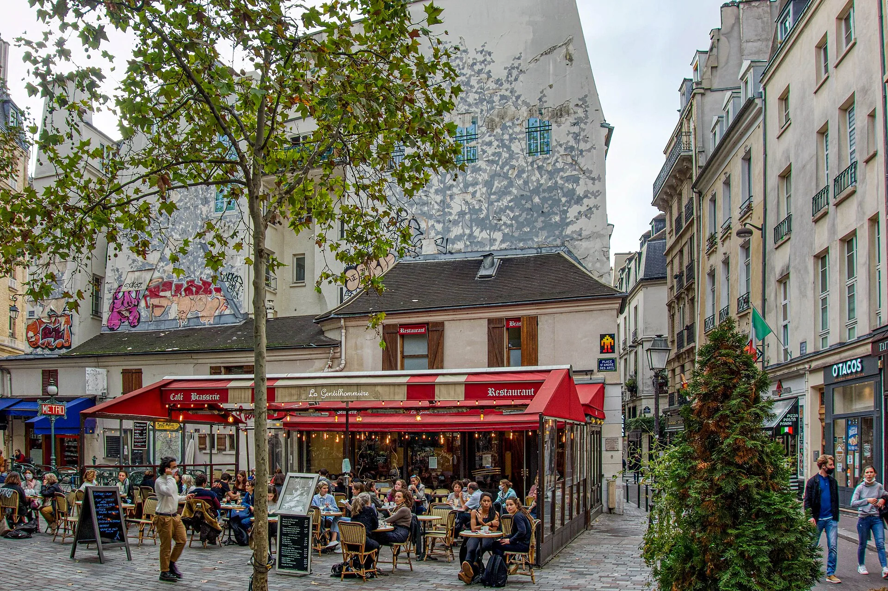
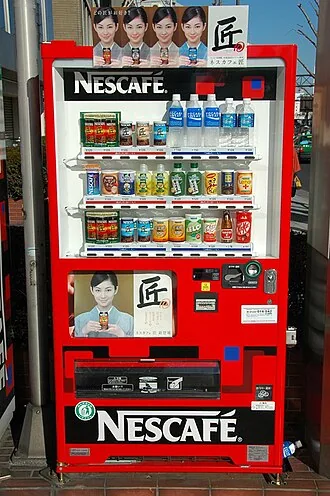
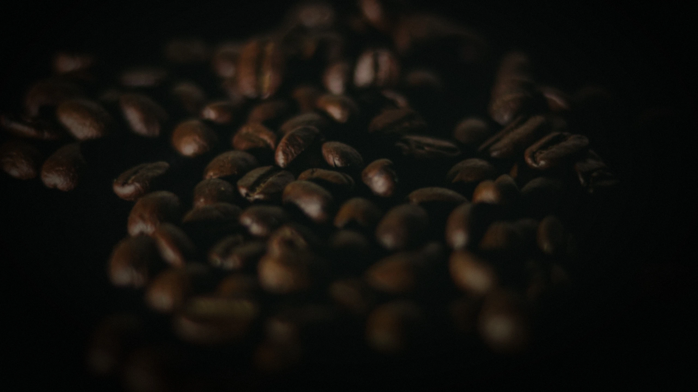
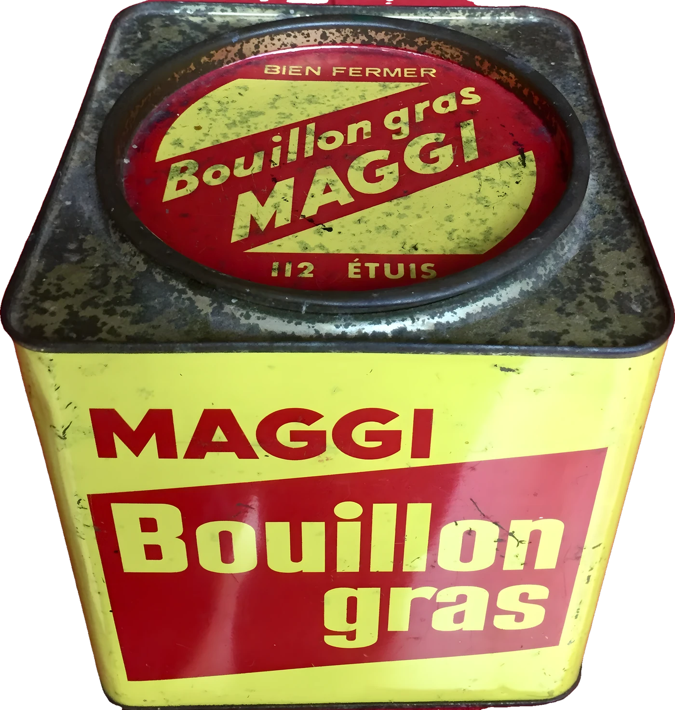
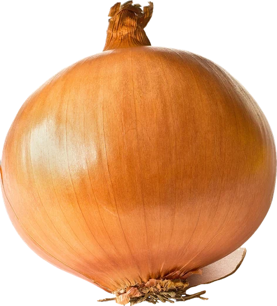

A closer look at how global brands connect with local consumers.
France The classic four-finger bar sits at the heart of the range.
Japan Regional and seasonal flavours, and a good-luck gift: “Kitto Katsu”.
France Coffee with milk at breakfast, capsule machines at home.
Japan Gold Blend, home coffee machines and coffee on the go.
France Stock cubes for soups and slow-cooked classics.
Japan Maggi Bouillon, a Western-style stock for home cooking.

KitKat: beyond the classic break.
France
Japan 日本
The classic break
Four milk-chocolate wafer fingers: the bar at the heart of the French range.
Flavours made to gift
Uji Matcha, Sakura Matcha and regional editions. Students receive it for luck: “Kitto Katsu”, you will surely win.

Nescafé: different habits.One coffee brand.
France
Japan 日本
Breakfast, then the machine
Coffee with milk to start the day, and Dolce Gusto capsules for the home.

At home and on the go
Gold Blend instant and home machines, plus ready-to-drink coffee from vending machines.

Maggi: local taste. Global brand.
France
Japan 日本
Stock for slow classics
Cubes such as Kub have flavoured French soups and pot-au-feu for generations.
Pictured: historic Maggi France tins.
マギー ブイヨンMaggi Bouillon
A Western stock, a Japanese table
Nestlé Japan sells Maggi Bouillon for dishes like potofu. Maggi reached Japanese hotel kitchens in 1927.
No verified photo of the Japanese pack was available, so none is shown.


Think globally.Adapt locally.
Global brand strength comes from understanding local consumers.
Market context · France vs Japan
Two markets.Different routes to relevance.
FranceObserved
InterpretationWhere adaptation happens
Japan 日本Observed
Nestlé is established in France across chocolate, coffee and culinary. KitKat centres on the classic four-finger bar.
KitKatLocal flavours, provenance and gifting
Regional and seasonal flavours since 2000, many inspired by local ingredients. Exam-season gifting, tied to “kitto katsu”.
Nescafé sells soluble coffee and Dolce Gusto capsule formats.
NescaféRoutines, formats and services
Workplace coffee through the Nescafé Ambassador programme (since 2012), with Barista and Dolce Gusto machines.
Maggi’s French range includes KUB stock cubes and Arôme Maggi liquid seasoning.
MaggiFamiliar culinary uses and local recipes
Maggi Bouillon, a Western-style stock, used for home dishes such as potofu.
The right adaptation depends on the category and consumption occasion, not on national stereotypes.
Sources: Nestlé Japan (KitKat regional range since 2000; exam-season packs); Nestlé Japan, Nescafé Ambassador (launched 2012); Nestlé Japan press releases on Maggi (2019, 2025); French retail listings for Maggi KUB and Arôme Maggi. Interpretation: team analysis.
Packaging · Global identity, local relevance
One brand identity.Locally relevant packaging.
FranceObserved
Brand logoProduct name and function, in FrenchPreparation · mandatory information
Clear, familiar, in French
French-language product information is required.
Clear product function and preparation instructions.
LanguageProduct informationPack formatFlavour communicationOccasion and presentation
Japan 日本Observed
宇治抹茶 Uji matcha日本土産 “Japan souvenir”3枚入 3 pieces
Local language, place and occasion
Japanese-language information and usage are required.
Local ingredients and regional storytelling.
Gift-oriented packs where the occasion calls for it.
KitKat is the clearest case: one brand code, many regional and gift-ready packs.
Sources: Regulation (EU) No 1169/2011, art. 15; French Consumer Code, art. R412-7; Japan Food Labeling Act (Act No. 70 of 2013) and Food Labeling Standards (2015). Pack: KitKat Uji Matcha box, photographed in Japan (Wikimedia Commons). Recommendation: team analysis.
Pricing · Comparing value across markets
Pricing: comparing value,not just shelf price.
No prices are shown: equivalent, dated shelf prices for both markets have not been collected yet. This is the method for collecting them.
01
Match the SKU
Same product variant, format and pack size in both markets.
02
Normalise the price
Price per 100 g, 100 ml or serving. Convert currencies at the same collection date.
03
Map the price ladder
Entry, core and premium. Keep limited editions and gift formats apart from everyday products.
04
Read the context
Promotions, retailer type, taxes, production costs and machine-system costs where relevant.
RecommendationWhat to compare, by category
KitKat
Compare everyday bars with everyday bars. Regional and gift editions are a separate tier.
Nescafé
For machine formats, compare the cost per cup, including the machine and its capsules or refills.
Maggi
Compare pack size and cost per preparation, not price per pack.
Method: team recommendation. No prices, margins or market shares are shown because no comparable, dated data has been collected for both markets.
Distribution · Channels by category
Reaching consumersin the right place.
Supermarkets & hypermarkets
Convenience & vending
Online grocery
Regional & travel retail
Workplace & machine services
Recipe & cooking content
KitKatImpulse · gifting
FR JP
FR JP
—
JP
—
—
NescaféHome · work · on the go
FR JP
JP
FR
—
FR JP
—
MaggiEveryday cooking
FR JP
—
FR
—
—
Rec.
FR JP channel used for the category in that marketJP Japan-specificRec. recommended role, not an observed channel— no claim made
Distribution should follow the consumption occasion.
Basis: qualitative mapping from this deck’s evidence (Nestlé Japan: Nescafé Ambassador, regional KitKat; Nescafé vending in Japan; French retail listings). No channel shares or dominance are implied.
Advertising & communication · Local meaning, global brand
Translate the meaning,not just the slogan.
Japan
Exam-season encouragement on packs.
The “kitto katsu” sound-alike: “you will surely win”.
Regional souvenir storytelling.
Observed
Japan
The coffee experience, at home and at work.
Workplace coffee culture.
The Nescafé Ambassador programme (since 2012).
Observed
France
Culinary familiarity.
Everyday cooking.
Products such as KUB and Arôme Maggi.
Observed
Creative rules Recommendation
France
Product use and taste.
Convenience.
Everyday relevance.
Japan
Context-rich storytelling.
Local provenance.
Occasion-based relevance, where evidence supports it.
Both markets
Test creative with local consumers.
Avoid stereotypes.
Preserve the brand’s core promise.
Sources: Nestlé Japan (exam-season KitKat packs; Nescafé Ambassador, launched 2012); French retail listings for Maggi KUB and Arôme Maggi. Creative rules are recommendations, not past campaigns.
Students facing university entrance exams, and the people who support them.
Behaviour & context
Exam-season support shown as cherry blossoms; “sakura saku” was the old telegram for “passed”.
Versus France
Emotional and collective: the brand carries other people’s encouragement.
What it shows
Nestlé localises the meaning: name, season and ritual make KitKat a good-luck gift.
Videos: KITKAT France, “PUB KITKAT® BETTER BREAKS” (YouTube); Nestlé Japan official channel, “キット、サクラサクよ 受験生応援 メッセージ桜 30秒版” (YouTube; message blossoms at Harajuku JING, Jan. 2024). Rules: French health banner (law of 9 Aug. 2004); Loi Toubon (1994). Observed · Interpretation
Key findings
Global platform.Local execution.
01
Protect global brand codes
Keep what makes the brand recognisable identical in every market.